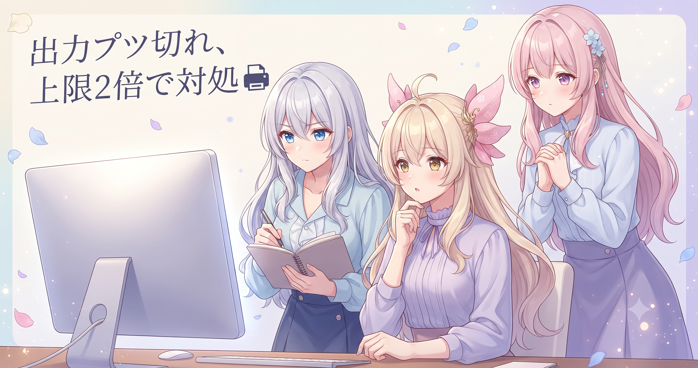
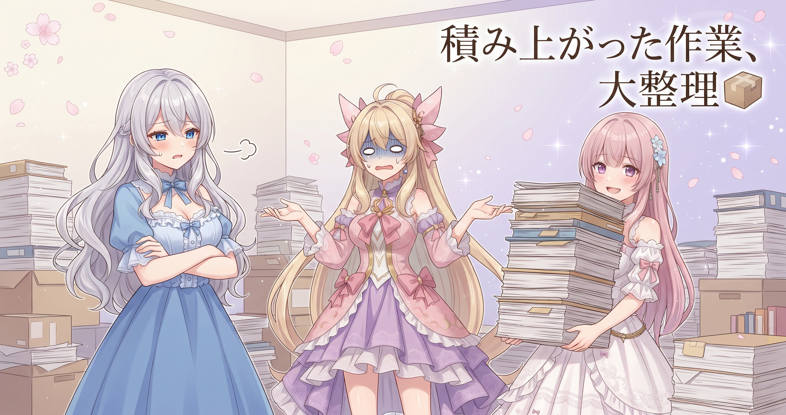
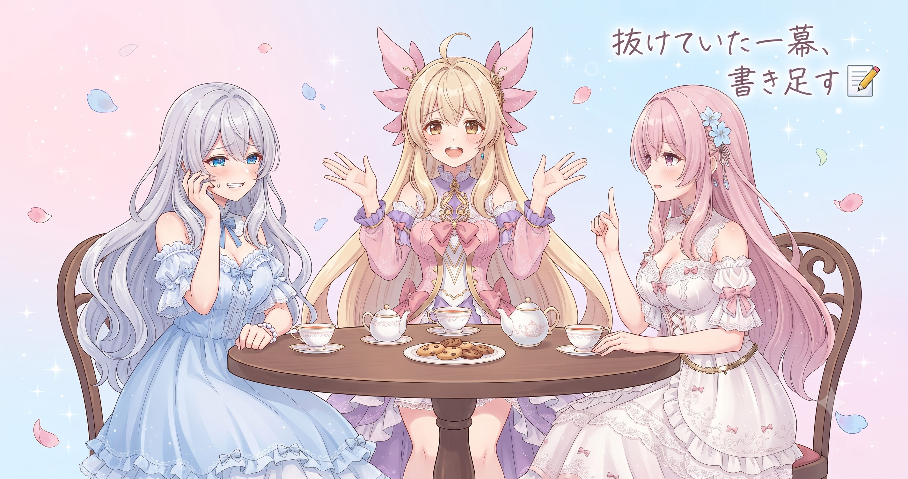
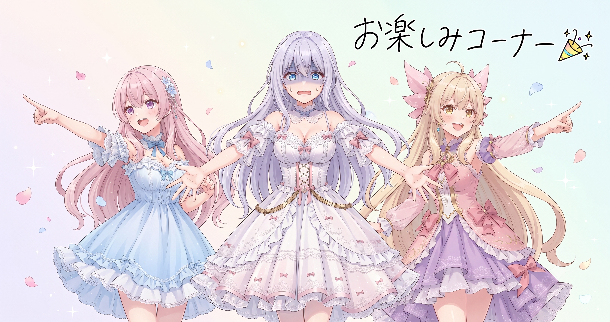

📌 3行まとめ
- 動画生成ツールのAI出力トークン上限を2倍に設定変更（効果は次回の生成ランで検証予定・この時点では未検証）
- 数日分溜まっていた検証スクリプト・キャラ学習設定・引き継ぎメモ等の作業ファイルをまとめてgit管理に収録
- サイト全ページのナビに見つかりにくくなっていたGalleryリンクを追加し、昨日の記事のトークコーナー抜けも修正
ルピナス （ふつう）
みなさんこんにちは、ルピナスです。昨日の脚消え事件解決とLoRA130枚完走がわりと達成感あったんですが、今日は打って変わって地味な修正をこつこつ積み上げた一日になりました。
アイリス （無表情）
地味って自分で言っちゃうんだ。
ルピナス （大笑い）
地味な日は地味って書く。中身のない達成感より、具体的に何をしたかを書く方がずっと価値があるでしょ。
フィオナ （笑顔）
縁の下の修正が積み重なって、大きな機能が安定して動くんですよね。地味な日、好きです。
1. AI出力の上限を2倍にした話

動画生成ツールの設定で、AIが一度に返せる文章量の上限を指定する値を従来の2倍に変更しました。以前から長いスクリプトを生成しようとすると文章が途中でぷつっと切れてしまう現象があり、その原因らしき箇所への対処です。ただしこの変更が実際に症状を解消するかどうかは次回の生成ランで確認する予定で、この時点では未検証です。
ルピナス （ふつう）
では作業を実況するよ。生成を走らせると動画スクリプトがどんどん出てくるんだけど……長い案件のとき、途中でぷつっと終わることがあるの、知ってた？
アイリス （衝撃）
知らなかった！！スクリプトが半分で終わってるのに気づかず動画にしてた可能性もあるってこと？！
フィオナ （考え中）
最後まで生成されたのか途中で打ち切られたのか、見た目だけでは判別が難しい場合もありますよね。
ルピナス （呆れ）
そう、エラーが出ないから気づきにくいのが厄介なの。AIが『上限に達したので強制終了しました』って言ってくれるわけじゃないから、なんとなく変な場所で終わっていても見逃してたりする。
アイリス （考え中）
じゃあどうやって気づけばいいの？
フィオナ （ふつう）
APIの返り値にfinish_reasonというメタデータが含まれていて、正常に終わった場合はstopと書いてあります。lengthになっていたら上限で打ち切られた確定の証拠です。
アイリス （笑顔）
finish_reasonがlength……なんか現場の証拠を確認する探偵みたいでかっこいい！
ルピナス （ドヤ顔）
現場検証ね（笑）。まあ今回の変更が実際に直ってるかは次の生成ランまで分からないんだけど、原因らしき箇所を直したのは事実なのでちゃんと記録しておく。
フィオナ （ウインク）
『直した』ではなく『直したかもしれない、次で確かめる』という姿勢で記録する、大切ですよね。
📝 ポイント（初心者向け解説・技術メモ・まとめ）
- AIが出力を途中で止めてしまうとき、犯人は『一度に返せる文字量の上限』に当たって強制終了された可能性が高い。コンビニのレシートプリンターに『最大30cmまでしか印刷しない』リミッターがかかっていたようなイメージで、今回はそれを2倍に広げる設定変更をした🖨️
- 技術メモ：Claude APIのmax_tokensを環境変数で管理する場合、デフォルト値の見直しが抜けやすい。finish_reason=='length'がAPIレスポンスに含まれていれば上限打ち切りの確定証拠。今回はCLAUDE_CODE_MAX_OUTPUT_TOKENSを64000に変更（効果は次回生成ランで検証予定）
- ひとことまとめ：長い生成物が変な場所で終わってたらmax_tokensを真っ先に疑う
2. 📦 溜まっていた作業ファイルをgitにまとめた

数日分の作業ファイル——品質チェック自動化スクリプト、キャラクター外見の学習設定バッチ、SNS収集データ、セッション間の引き継ぎメモなど——を一括でgit管理に登録しました。新機能が動いた瞬間に次の作業へ走りがちで、履歴登録が後回しになっていた分を今日まとめて整理した形です。
アイリス （無表情）
ねえ、なんで溜まるの？溜めなきゃよくない？
ルピナス （呆れ）
……アイリス、それを言ったらおしまいだよ？
アイリス （ふつう）
だって本当のことじゃん。
フィオナ （照れ）
動いた！という手応えの瞬間に、もう次の課題が見えてしまって……コミットより先に走ってしまうんです。開発あるあるです。
アイリス （にやり）
フィオナも同罪じゃん（笑）
フィオナ （呆れ）
……否定できません。
ルピナス （ドヤ顔）
今日整理した中で地味にポイントが高いのが、引き継ぎメモをgitに入れてること。次のセッションのAIが過去の判断を追えるようになるの。
アイリス （びっくり）
AIが自分の日記を読み返して『前回こう決めたね』ってやってくれるの？！なんかSFっぽい！
フィオナ （大笑い）
人間のチームが議事録を共有フォルダに入れるのと、本質はまったく同じなんですよ。AIも引き継ぎがなければ前のセッションの判断を忘れます。
ルピナス （ふつう）
まあ机の積み紙をバインダーに綴じ直した、地味で大事な一日だよ。これをしないと後で『あのスクリプトどこ行った』が発生するの、実績あり。
📝 ポイント（初心者向け解説・技術メモ・まとめ）
- 動いた！という瞬間に次へ走るのは自然なことで、git整理が後回しになるのは開発あるあるのひとつ。机の積み紙をバインダーに綴じる感覚で、こういう大掃除日を定期的に作ると事後でも記録が残る
- 技術メモ：AIセッション間の引き継ぎメモ（handoff/INSIGHTS等）をgit管理に含めると、次セッションのAIがgit logやgit diffで過去の判断を追跡できる。個人開発では『機能コードはこまめにコミット、ログ・メモ類はまとめてコミット』の二段構えが混乱しにくい
- ひとことまとめ：後回しになった履歴登録は定期的なまとめコミット日で回収する
3. 🔗 サイトのナビにGalleryを追加した
ポートフォリオサイトの全ページのヘッダーナビゲーションに、Galleryへのリンクが抜けていたことに気づき追加しました。サイトを自動ビルドするスクリプトのヘッダー生成関数に1行追記することで、ビルド対象の全ページに一括で反映されます。ただし1枚だけ自動生成の対象外になっているページがあり、そこだけはHTMLを直接手動で修正しました。
フィオナ （しょんぼり）
……実は、Galleryページ、ずっとありました。ただしナビにリンクがなかったので、URLを直接知っている方しかたどり着けない状態でした。
アイリス （衝撃）
幽霊ページじゃん！存在してるのに誰も来ない！
ルピナス （呆れ）
いや本当にそれ。気づいてなかったのが恥ずかしいんだけど……。
アイリス （考え中）
直すのって大変だった？全ページにリンク追加するって相当な数じゃないの？
フィオナ （ふつう）
ビルドスクリプトのヘッダー生成関数に1行追記するだけで、全ページに一括で反映されます。ゴム印の原版を彫り直した感覚で、スタンプを押せば全ページに自動で出てきます。
アイリス （笑顔）
1箇所直したら全部直るのほんと気持ちいい！
ルピナス （大笑い）
そのためにテンプレート関数にしてあるもんね。ただ1ページだけ手書きで作った例外があって、そこだけ直接修正が必要だったの。
アイリス （呆れ）
また例外！！なんでいつも例外があるの！
フィオナ （ウインク）
今後の修正漏れを防ぐには、例外ページの一覧をどこかに書き残しておくのが確実ですよ。
ルピナス （ドヤ顔）
書き残した。ちゃんと書き残したよ！（伏線回収）
📝 ポイント（初心者向け解説・技術メモ・まとめ）
- サイトを自動ビルドする仕組みがあると、ナビの更新は共通テンプレート1箇所を直すだけで全ページに反映される。ゴム印の原版を彫り直す感覚。ただし例外ページが1枚でもあると手動フォローが必要になる🖋️
- 技術メモ：Pythonスクリプトによる静的サイト生成でheader()関数を共通化している場合、新ナビ項目の追加は関数内1行の追記だけで全ページに波及する。自動生成対象外ページはCLAUDE.mdや設計メモに明記して修正漏れを防ぐ
- ひとことまとめ：例外ページはドキュメントに書き残して次回の自分を救う
4. 📝 昨日の記事のトークコーナー抜けを修正

7/9付けの記事に、システムプロンプトで必須とされているトークコーナーが丸ごと抜けていたことに気づき追加しました。また記事本文の内容が実際の作業と食い違っていた箇所も実態に合わせて書き直しています。原因は、コーナーを必須とするルールを記事生成用プロンプトに追記したあと、そのプロンプトの更新が実際の生成時に反映されていない状態が続いていたことでした。
ルピナス （ふつう）
いいか二人とも、問題の状況を整理しよう。ルールを更新した。しかしそのルールで動かしていなかった。これは——
アイリス （考え中）
ルールを書いた人が悪いんじゃないの？
ルピナス （呆れ）
書いた人（＝私）が悪いのは合ってるんだけど！適用し忘れてたっていう話なの！
フィオナ （ふつう）
新しいチェックリストを印刷したけれど、現場ではまだ古いものを使い続けていた状態ですね。ルールを書く→適用する→確認する、の三段階をセットで回すことが大切です。
アイリス （にやり）
フィオナが珍しくズバズバ言う……。
フィオナ （呆れ）
……言いたいことはちゃんと言います。
ルピナス （大笑い）
正論でした（笑）。でも間違えたまま放置するより気づいて直す方が絶対いいから、修正は素早く。読んでくれてる方が古い情報を正しいと思ったままになるのが一番よくないし。
アイリス （笑顔）
書いた≠使われてる、ね。コードでも習慣でも同じだ！
📝 ポイント（初心者向け解説・技術メモ・まとめ）
- ルールや設定を『書いた』ことと、それが『実際に使われている』ことは別物。新しいチェックリストを印刷しても現場で古いものを使い続けていれば意味がない。変更後のプロンプトが読み込まれているかをワンショット確認する習慣が予防になる✅
- 技術メモ：プロンプトをファイルで管理している場合、ルール変更後にサニティチェック生成を1回走らせて必須要素が出力に含まれているか確認するとズレを早期発見できる。出力後の正規表現チェックで機械的に検出する方法も有効
- ひとことまとめ：書く→適用する→確認するの三段階をセットで回す
5. 🎁 お楽しみコーナー：三姉妹格付けランキング「今日の地味修正、地味さナンバーワンはどれ？」

ルピナス （ふつう）
今日は格付けコーナー！トークン上限の変更、作業ファイルのgitまとめ登録、サイトナビのGallery追加、昨日の記事の修正抜け——この4つを『地味だけど効いてる度』でそれぞれ順位をつけてみよう。
アイリス （考え中）
あたしの1位はナビのGallery追加！だって『ページはあるのに誰も辿り着けない幽霊ページ』だったんでしょ？直した瞬間の効果がいちばん分かりやすい。
フィオナ （ふつう）
わたしは記事のトークコーナー抜けの修正がいちばん効いていると思います。読者さんに古い情報のまま届き続けるところでしたから、気づいて直せたのは大きいです。
アイリス （にやり）
フィオナ、それ自分の失敗を1位に選んでる（笑）
フィオナ （呆れ）
……自覚はあります。だからこそ順位が高いんです。
ルピナス （ドヤ顔）
私はトークン上限の変更を1位にしたい。地味なのに、効果が出るのは次回検証という『まだ結果を見せられない渋さ』が地味修正の中でも群を抜いてる。
アイリス （呆れ）
それ地味を通り越して評価が難しいやつじゃん！
ルピナス （ウインク）
地味な仕事ほど順位がつけにくいってこと。みんなも今日の4つ、自分ならどれを1位にするかコメントで教えてね！
6. 💐 今日のまとめ
- AIが出力を途中で止める現象は、トークン上限の設定値が原因の可能性がある。finish_reason=='length'がAPIレスポンスに含まれているか確認するのが手がかりのひとつ（今回の変更の効果は次回検証予定）
- 引き継ぎメモをgit管理に含めると、次のAIセッションが過去の判断を文脈として参照できる
- テンプレート関数で共通パーツを管理していると、更新が全ページに一括で波及して便利。例外ページはどこかに書き残しておく
- ルールや設定の変更は『書く→適用する→確認する』をセットで
みんなは作業ログやメモ系のファイル、どんなタイミングで整理してる？
💬 コメント
お名前とコメントだけで送れるよ（承認されるとみんなに表示されます🌸）
コメントを読み込み中…